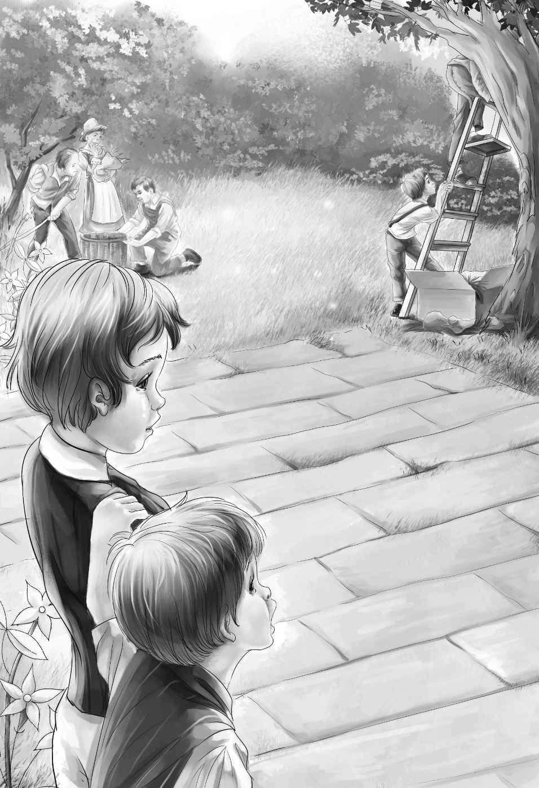

The next morning Henry thought and thought about taking the other children to pick cherries with him．At last he told his sisters about it as they ate bread and milk for breakfast．
“Dr．Moore said he wanted more children to help．Do you think all of us ought to go， Jessie？”
“Well，” said Jessie， “I don’t know．You see， there are four of us．If Grandfather is looking for us， it would be easier to see four than one．”
“Yes， that’s so，” answered Henry．“But we can go down the hill and through the streets two by two．I’ll take Benny and go ahead．Then in a little while you and Violet can come with the dog．”
“Good！” said Jessie．“Watch can tell where you go．”
The children took down the clothesline and shut the door of the car．Everything was in order．Then they started out．

When they arrived at the orchard， they soon saw that they were not the only workers．The doctor was there， and the cook， and two men carrying ladders and baskets．
“Good morning， Henry，” said Mrs．Moore．“Can you work today？”
“Oh， yes，” said Henry．“These are my sisters， Jessie and Violet．They can pick cherries， too．Benny is too young to climb trees， but we had to bring him．”
“Maybe he can carry baskets，” said Dr．Moore， smiling at Benny．“You see， this is a big cherry year， and we have to work fast， once we begin．Maybe he can help fill the little baskets from the big ones．”
“Eat all you want，” said Mrs．Moore．“The cherries are beautiful this year．”
The children didn’t eat all they wanted， but every now and then a big red cherry went into someone’s mouth．
Henry and the girls went up the ladders and began to pick cherries．Watch barked for a while．He did not like to have Jessie climbing the ladder．Then he sat down and looked at her up in the tree．
Benny hurried here and there， carrying baskets to the pickers and eating all the cherries he wanted．Everyone in the orchard liked Benny．The doctor laughed delightedly at him， and sweet Mrs．Moore fell in love with him at once．By and by he sat down beside her and carefully filled small baskets with cherries from the big baskets．
The men laughed at the funny things Benny said， and Watch barked happily．By and by the doctor left the orchard to make some calls．
At last Mrs．Moore said， “I never had such happy cherry pickers before．You are having such a good time out here that I don’t want to go in the house．” She smiled．
Mary， the cook， seemed to think the same thing， for she came again and again into the orchard．
After a while the cook went in to get dinner， but the children still picked cherries．At noon Dr．Moore came home．
“You must stay to dinner，” he said to the children．“We can eat here in the orchard under the trees．Will your mother be watching for you？” When he asked this， he looked at Henry in a queer way．
Henry did not know what to say．But at last Jessie said， “No．Our mother and father are dead．”
“Then you must stay，”said Mrs．Moore．“Here comes Mary．”
The cook put a table under the trees， and they all sat around it and ate a delicious dinner．Then Mary went into the house and came out again with big bowls of cherry dumplings．
“I can smell something good！” cried Benny．“Is it cherries？”
“Yes， my little dear，” said Mary．“Cherry dumplings．The cherries are cooked in the dumplings．”
Benny ate his cherry dumpling and then went to sleep with the dog for a pillow．But Henry and Jessie and Violet began to work again．Mrs．Moore looked out of the window at them．
“Just see how those children work，” she said to Dr．Moore．“And they are so polite， too．I wonder who they are．”
Dr．Moore said nothing．After a while he went out to the orchard．“You have worked long enough，” he said．
He gave them four dollars and all the cherries they could carry．
“That is too much，” said Henry．
“No，” said Dr．Moore， “it is just right．You see， you are better than most workers，because you are so happy， Come again．”
“I’ll come every day，” said Benny．
They all laughed．
Dr．Moore saw that the children did not all leave the orchard at the same time， but started down the street two by two．
“I wish I knew who they are，” he said to himself．
When the cherry pickers got back to their little home， they looked everything over carefully．But things were just as they had left them．The door was still closed， and the milk and butter were in the refrigerator．The children made a happy supper of bread and butter and cherries and then went to bed in the boxcar．
That same night Dr．Moore sat reading the paper．All at once he saw the word LOST and began to read．
“LOST．Four children， two boys and two girls．Somewhere around Greenfield or Silver City．Five thousand dollars to anyone who can find them．
James Henry Alden．”
Dr．Moore sat up．“Five thousand dollars！” he said．“James Henry Alden！ Oh， my！ Oh， my！”
He sat still for a long time， thinking and laughing to himself．
“The four children are living in a boxcar， but I shall not tell Mr．Alden that they are his grandchildren，” he said．